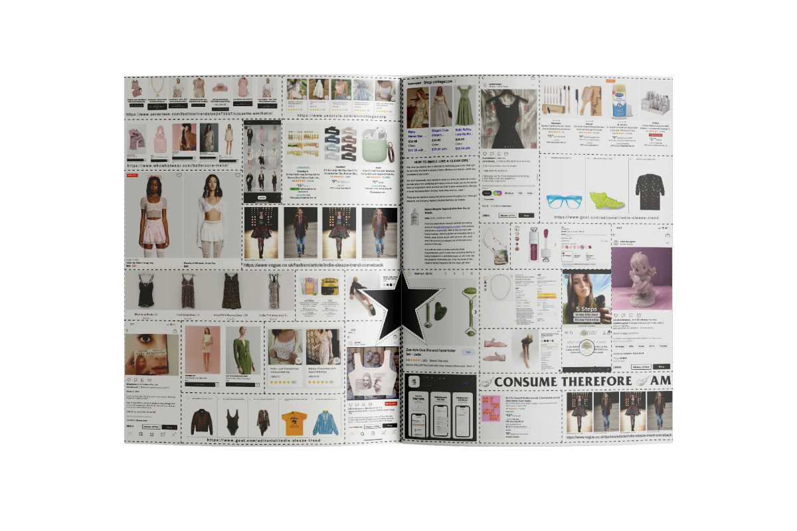

Girl Online3 is a publication
exploring girlhood on the internet
exploring girlhood on the internet

On the internet, the power of using images to convey meaning when grouped together has become more present over time. Teenage girls understand this while navigating the internet at an early age; and have turned this into a part of their internet experience. Using images to express themselves, girls carefully curated ways in order to stand out and find others who have similar aesthetic sensibilities.
Similarly to the ways in which subcultural style used to work but is detached from any IRL base—the images live in the digital realm in the shape of tumblr blogs, pinterest mood boards, tik toks and other social media.
Girl online is a project about the act of making meaning out of the organization of images. And the way in which young people, specifically girls, do this by packaging their online personas into different “aesthetics” that are articulated through the grouping of images and media that then become trends that are sold back to them, trapped in an endless cycle of consumption.
Using the research gathered from aesthetics wiki and my own time spent online, this project attempts to create a printed version of the online world of “aesthetics.” Through the use of webs that explicitly show these connections in the format of a magazine. By using a traditional medium generally used to sell aspirational visuals for women in the same way that social media images often do.

How can we play with identity and style online and IRL?